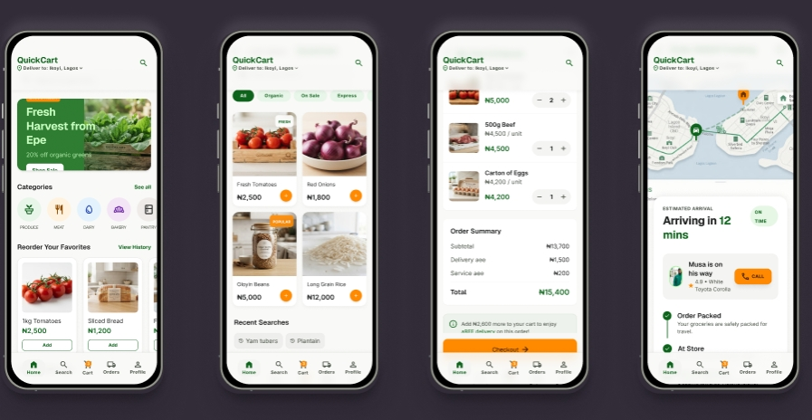
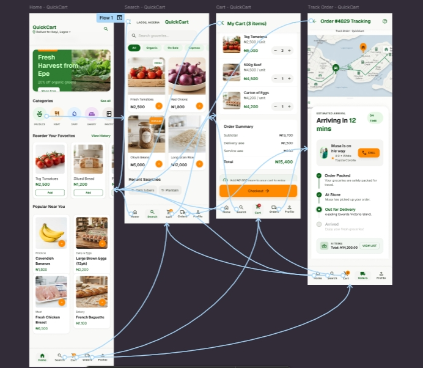

QuickCart
Designing a grocery delivery app for the Lagos professional who has no time to shop, but every reason to expect it done right.

Groceries, treated as an afterthought
Busy urban professionals in Lagos need a fast, reliable, and uncluttered way to order everyday groceries. Existing delivery apps don't give them that — Glovo bundles groceries in with food, parcels, and pharmacy in one dense, ad-heavy feed, while Chowdeck is built almost entirely around hot meals, not a stocked pantry.
The result: slower checkout, unclear delivery times, and a shopping experience that feels like it was bolted on, not designed for.
"Busy urban professionals in Lagos need a fast, reliable, and uncluttered way to order everyday groceries — because existing delivery apps are optimized for food and parcels first, groceries second."
Meet Amaka
QuickCart was designed around one grounded persona — a working professional who represents the core weekly-grocery habit the product needed to serve well.
Works 9am–6pm with a 1–2 hour daily commute, lives alone, and shops for groceries weekly. She doesn't want an app that makes her rebuild her cart from scratch every time — she wants to restock quickly, trust what arrives, and know exactly when it's coming.
"I just want to reorder what I got last week in under a minute."
What existing apps get wrong
A direct competitive read against Glovo and Chowdeck — QuickCart's two closest points of comparison in the Lagos delivery market — surfaced a consistent theme: neither app was actually built around groceries as the primary use case.
Glovo mixes food, groceries, parcels, and pharmacy in one feed. Chowdeck is built almost entirely for hot food. Neither gives groceries a dedicated, uncluttered home.
Grocery shopping is repetitive by nature — the same items, week after week. Generic order history isn't optimized for that habit the way a dedicated reorder flow could be.
Users tolerate a 30–40 minute wait if the ETA is accurate. Vague delivery windows, more than slow delivery itself, are what erode trust.
Card and wallet payments alone don't match how Lagos shoppers actually pay — Pay on Delivery needed equal visual weight, not a buried secondary option.
These findings shaped a clear opportunity: build the grocery-first, trust-forward experience that neither competitor prioritizes.
Four screens, one uncluttered flow
QuickCart's core experience covers the full grocery journey — from opening the app to watching the delivery arrive — kept flat and shallow so nothing is more than two taps from Home.
Home
Categories, active promos, and popular items surfaced immediately — no digging required to start an order.
Search
Fast product search across categories and stores, built for someone who already knows what they want.
Cart
Items grouped by store with a fully transparent order summary — subtotal, delivery fee, service fee, and total, before checkout.
Track Order
Live delivery tracking with real-time status and an accurate ETA — the single biggest trust signal identified in research.

Primary user flow — Home → Search → Cart → Track OrderThe choices that shaped the product
Green over red or orange. Both Glovo and Chowdeck lead with warm, food-app colors. QuickCart's primary green (#2E7D32) signals freshness and trust, and immediately reads as "grocery," not "takeout."
Amber reserved for action only. The accent color (#FF8A00) is used strictly for CTAs, badges, and prices — kept scarce so it always draws the eye to what matters.
ETA surfaced early, not buried. Delivery time appears at the cart stage and again on the dedicated Track Order screen, directly answering the research finding that certainty matters more than speed.
Maximum 3–4 colors per screen. A deliberate constraint against the cluttered, ad-heavy feel of competitor apps — every screen stays calm and scannable.
AI-generated screens, hand-finished. Initial high-fidelity screens were generated in Google AI Studio and imported into Figma via html.to.design — but every screen needed a manual consistency pass on spacing and color before it read as one cohesive product.
Try it live
The full clickable prototype covers Home → Search → Cart → Checkout → Track Order. Interact with it directly below, or open it in Figma.
What testing changed
Task-based usability testing on the clickable prototype asked users to search for fresh tomatoes, add them to cart, check out, and track the order — the full core loop, end to end.
ETA moved higher in checkout. Users said delivery time felt buried — it now sits directly next to the delivery time toggle, impossible to miss.
Pay on Delivery given equal weight. Several users missed it entirely when it was a secondary link — it's now styled with the same visual weight as card payment.
Clearer add-to-cart icon. The original "+" on product cards was ambiguous. It was replaced with an explicit cart-plus icon.
Prototyped and validated
QuickCart is a complete, tested case study — from problem statement through a validated, iterated prototype — documenting both the final UI and the reasoning behind every major decision along the way.
What I learned
Keeping visual consistency across AI-generated screens before the Figma cleanup pass was the biggest challenge on this project — each generation needed a manual pass to align spacing and color exactly, even with a shared design system prompt.
The clearest lesson from testing: small trust signals — a freshness note, an accurate ETA — mattered more to participants than any amount of visual polish. Grocery delivery is fundamentally a trust product before it's a visual one.
QuickCart also reinforced something I'm carrying into every build now: AI tools are excellent at generating a strong starting point fast, but the judgment of what's actually consistent, trustworthy, and usable still has to come from deliberate design decisions — not the first generation.